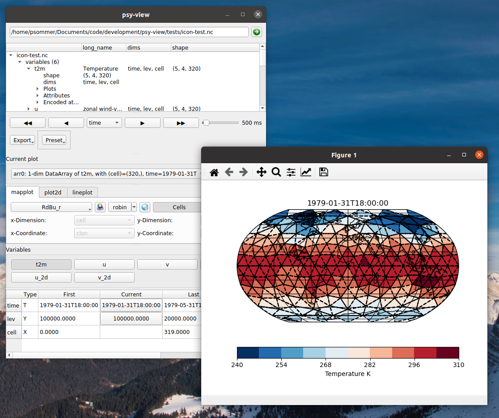

Welcome to psy-view!
psy-view defines a viewer application for netCDF files, that is highly motivated by the ncview software but entirely built upon the psyplot framework. It supports strucutured and unstructured grids and provides an intuitive graphical user interface to quickly dive into the data inside a netCDF file.
Warning
This package is currently under development and we highly appreciate your feedback! Please try it out yourself and, if you would like to see more features, find bugs or want to say anything else, please leave your comments and experiences at https://github.com/psyplot/psy-view/issues or send a mail to psyplot@hzg.de.
docs |
|
|---|---|
tests |
|
package |
|
implementations |
|
get in touch |
|


{kind=link}
Features
Some of the most important features offered by psy-view are:
intuitive GUI to select variables, dimensions, slices, etc. and change the plot
automatically decodes CF-conventions and supports unstructured grid, such as ICON or UGRID
animation interface
different projections
implemented in psyplot-gui for full flexibility (if desired)
Interested? Read more in the section psy-view vs. ncview.
Get in touch
Any quesions? Do not hessitate to get in touch with the psyplot developers.
Create an issue at the bug tracker
Chat with the developers in out channel on gitter
Subscribe to the mailing list and ask for support
Sent a mail to psyplot@hzg.de
See also the code of conduct, and our contribution guide for more information and a guide about good bug reports.